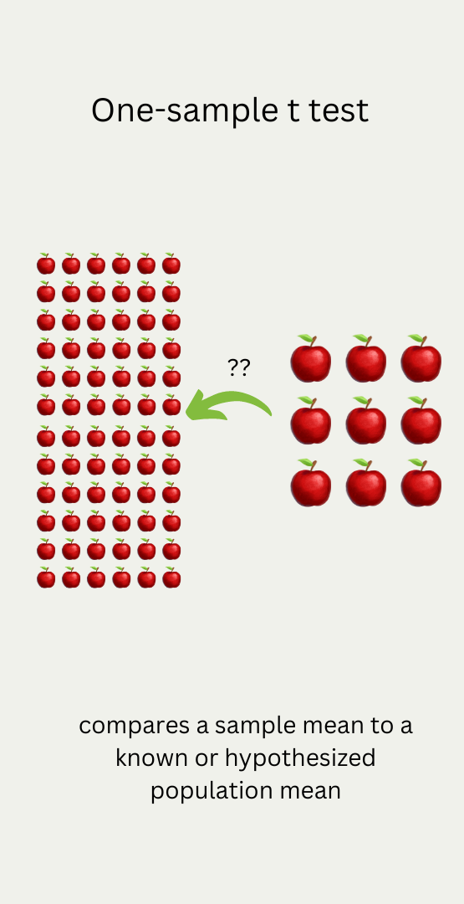
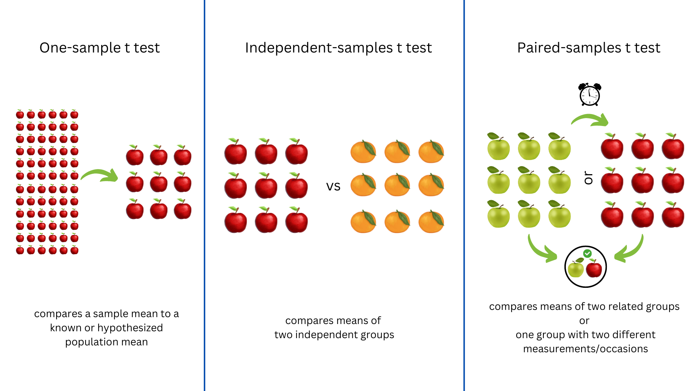
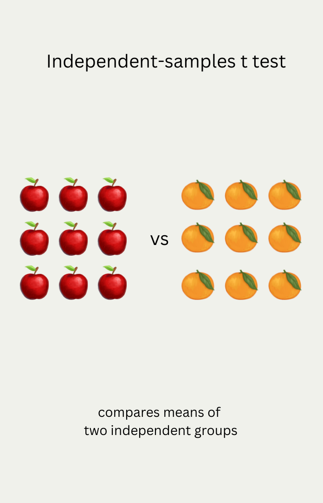
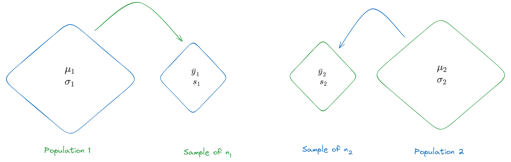
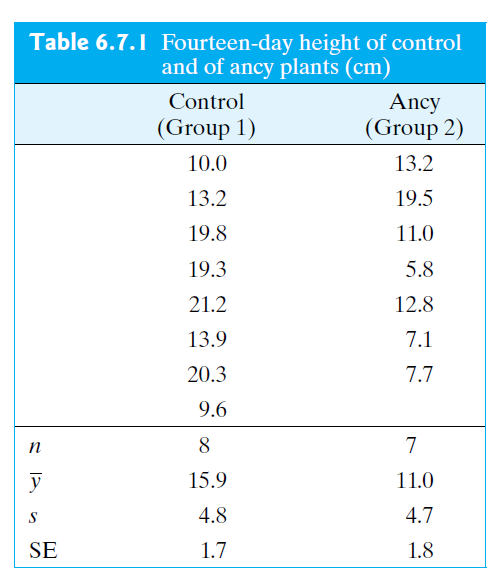
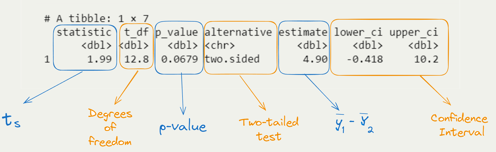

# A tibble: 1 × 7
statistic t_df p_value alternative estimate lower_ci upper_ci
<dbl> <dbl> <dbl> <chr> <dbl> <dbl> <dbl>
1 1.99 12.8 0.0679 two.sided 4.90 -0.418 10.2Comparing Two Means
STAT 218 - Week 6, Lecture 3
Let’s Remember
A Quick Snapshot
Independent-Samples t test
Introduction
- So far, we have interested in the analysis of a single sample of a numeric variable.
- In practice, most of the scientific research involves the comparison of 2 or more samples from different populations.
- If the observed variable is quantitative, the comparison of two samples can include
- comparison of means,
- comparison of standard deviations
- comparison of shapes.
- In this week, we will be dealing with the comparison of 2 means
Notation
- We employed a parallel notations but to be able to differentiate two samples from each other, we will use subscript.

- The two populations that we are interested in can be either
- naturally occurring populations (Figure 1) OR
- conceptual populations defined by certain experimental conditions.
Hypothesis Testing and Confidence Interval for (\(\mu_1\) - \(\mu_2\))
An Example
The Wisconsin Fast Plant, Brassica campestris, has a very rapid growth cycle that makes it particularly well suited for the study of factors that affect plant growth.
In one such study, 7 plants were treated with the substance Ancymidol (ancy) and were compared to 8 control plants that were given ordinary water. Heights of all of the plants were measured, in cm, after 14 days of growth.
(\(df\) for this question is calculated as 12).
Let’s see an example for hypothesis testing.

The Null and Alternative Hypotheses
The hypothesis that \(\mu_1\) and \(\mu_2\) are not equal is called an alternative hypothesis (or a research hypothesis)
\[ H_A: \mu_1 \neq \mu_2 \]
Its antithesis is the null hypothesis, \[ H_0: \mu_1 = \mu_2 \]
which asserts that \(\mu_1\) and \(\mu_2\) are equal. A researcher would usually express these hypotheses more informally and we can trace those hypotheses from the examples, problems and exercises in this course.
Alternatively we can express these hypotheses as following:
\[ \\H_0: \mu_1 - \mu_2 = 0 \\H_A: \mu_1 - \mu_2 \neq 0 \]
Confidence Interval for (\(\mu_1\) - \(\mu_2\))
Remember our CI formula when we had one single quantitative variable. \[ \\95 \% \ CI = (\bar{y} \pm \ multiplier \ \times \ SE_{\bar{y}}) \]
Let’s revise our 95% confidence interval formula for comparing two means.
\[ \\95 \% \ CI = (\bar{y_1}-\bar{y_2}) \pm \ multiplier \times SE_{\bar{Y}_1 - \bar{Y}_2} \]
What is Standard Error
The formula that we have used so far is
\[ SE_{\bar{Y}} = \frac{s}{\sqrt{n}} \]
Naturally, we can say that taking the difference between two sample means is an estimate of the quantity (\(\mu_1\) - \(\mu_2\)).
However, the formula for the standard error of the difference (\(\bar{Y}_1\) - \(\bar{Y}_2\)) is a little different from what we initially thought.
\[ SE_{\bar{Y}_1 - \bar{Y}_2} = \sqrt{SE_1^2 + SE_2^2} \]
\[ SE_{\bar{Y}_1 - \bar{Y}_2} = \sqrt{ \frac {s_1^2}{n_1} + \frac {s_2^2}{n_2}} \]
\[ SE_{\bar{Y}_1 - \bar{Y}_2} = \sqrt{ \frac {4.8^2}{8} + \frac {4.7^2}{7}} = 2.46 \]
Confidence Interval for (\(\mu_1\) - \(\mu_2\))
multiplier is 2.164 for this question.
\[ \\95 \% \ CI = (\bar{y_1}-\bar{y_2}) \pm \ multiplier \times SE_{\bar{Y}_1 - \bar{Y}_2} \]
\[ \\95 \% \ CI = (15.9 - 11) \pm \ 2.164 \times 2.46 \\ 4.9 \pm 5.32 \]
In our hypothetical example, we calculated 95% CI and we found it as (-0.42,10.22)
- We are 95% confident that the population average 14-day height of fast plants when water is used (\(\mu_1\)) is between 0.4 cm lower and 10.2 cm higher than the average
Calculate test statistic
- Test statistic is a measure of how far the difference between the sample means (\(\bar{y}\)’s) is from the difference we would expect to see if \(H_0\) were true (zero difference), the amount of variation we expect to see in differences of means from random samples.
\[ test \ statistic = \frac{(\bar{y}_1 - \bar{y}_2) - (\mu_1 - \mu_2)}{SE(\bar{y}_1 - \bar{y}_2)} \]
\[ \frac{(15.9 - 11.0) - (0)}{2.46} = 1.99 \]
R, Please Save Me!
Interpretation of R Output
Draw Conclusion
Conclusion: We fail to reject the null hypothesis. That is, the data do not provide strong evidence that Ancymidol suppresses plant growth.
But…
Ancymidol is known as a plant growth regulator that reduces plant growth by inhibiting gibberellin biosynthesis.
In our hypothetical example, we calculated 95% CI and we found it as (-0.4,10.2)
- We are 95% confident that the population average 14-day height of fast plants when water is used (\(\mu_1\)) is between 0.4 cm lower and 10.2 cm higher than the average 14-day height of fast plants when Ancymidol is used (\(\mu_2\)).
Is it reasonable to believe that the substance may affect plant growth? Discuss with your neighbor
Decision Errors
Type II Error (\(\beta\))
Definition
\(\beta\) = Pr{lack of significant evidence for \(H_A\)} if \(H_A\) is true
OR
failing to reject the null hypothesis when the alternative is actually true.
If \(H_A\) is true, but we do not observe sufficient evidence to support \(H_A\), then we have made a Type II error.
- We might have committed to Type II Error in Ancymidol example.
Type I Error (\(\alpha\))
Definition
\(\alpha\) = Pr{finding significant evidence for \(H_A\)} if \(H_0\) is true
OR
rejecting the null hypothesis when \(H_0\) is actually true.
- Claiming that data provide evidence that significantly supports \(H_A\) when \(H_0\) is true is called a Type I error.
- In choosing (\(\alpha\)), we are choosing our level of protection against Type I error.
- Many researchers regard 5% as an acceptably small risk.
- If we do not regard 5% as small enough, we might choose to use a more conservative value of a such as a = 0.01; in this case the percentage of true null hypotheses that we reject would be not 5% but 1%.
- Many researchers regard 5% as an acceptably small risk.
- In practice, the choice of a may depend on the context of the particular experiment.
- A regulatory agency might demand more exacting proof of efficacy for a toxic drug than for a relatively innocuous one.
- Also, a person’s choice of (\(\alpha\)) may be influenced by his or her prior opinion about the phenomenon under study.
- Suppose an agronomist is skeptical of claims for a certain soil treatment; in evaluating a new study of the treatment, he might express his skepticism by choosing a very conservative significance level (say, (\(\alpha\)) = 0.001), thus indicating that it would take a lot of evidence to convince him that the treatment is effective.
- For this reason, written reports of an investigation should include a \(P\)-value so that each reader is free to choose his or her own value of a in evaluating the reported results.
Type I Error vs Type II Error
- Table 7.3.2 displays the situations in which Type I and Type II errors can occur.
- For example, if we find significant evidence for \(H_A\), then we eliminate the possibility of a Type II error, but by rejecting \(H_0\) we may have made a Type I error.
Type I Error vs Type II Error

From Essential Guide to Effect Sizes by Paul D. Ellis (2010)